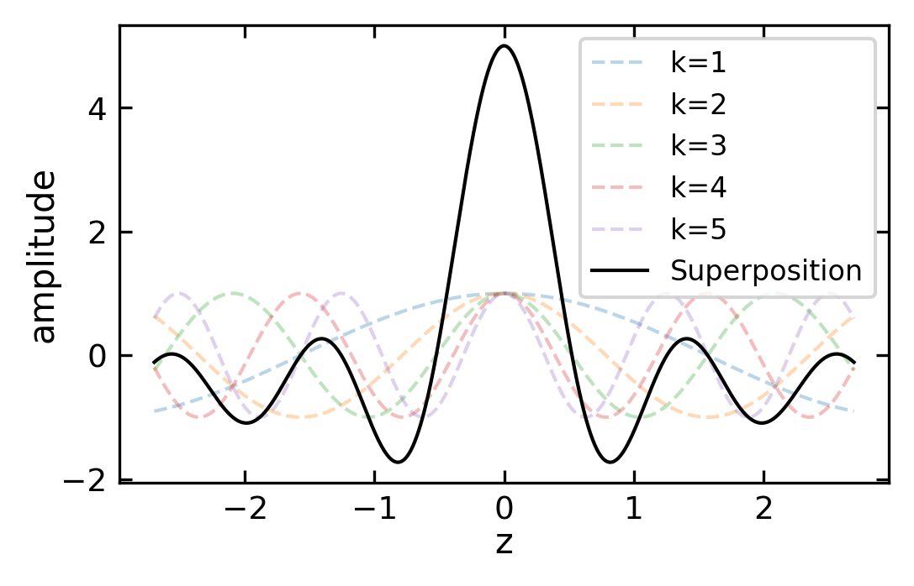
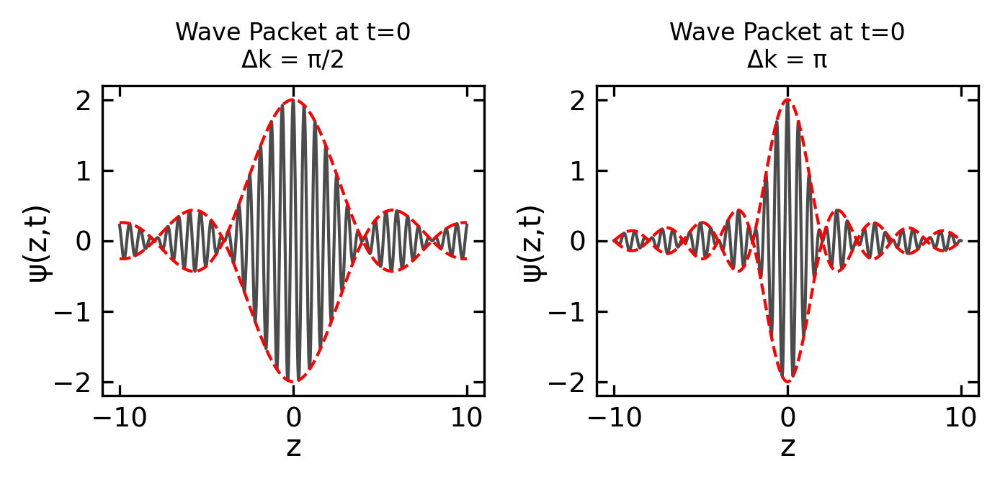
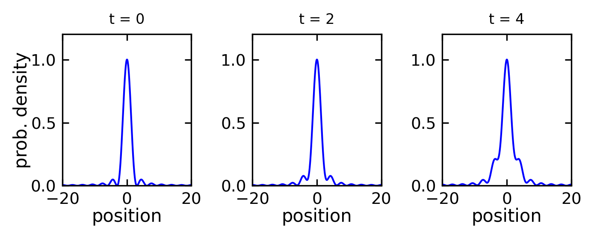
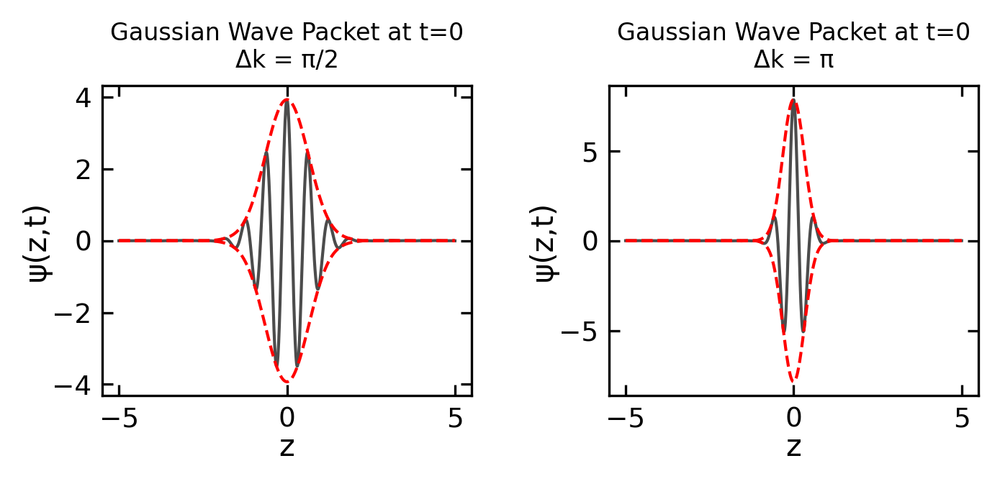
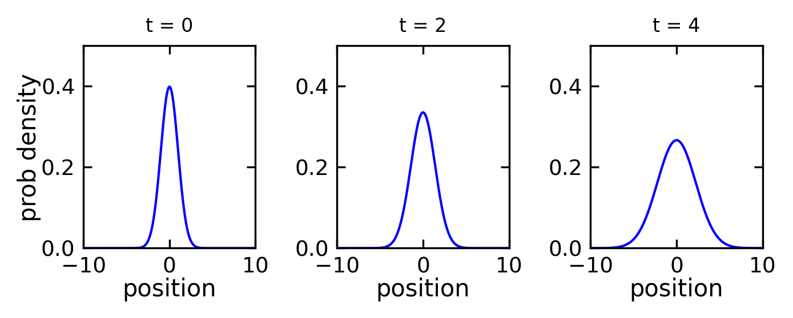
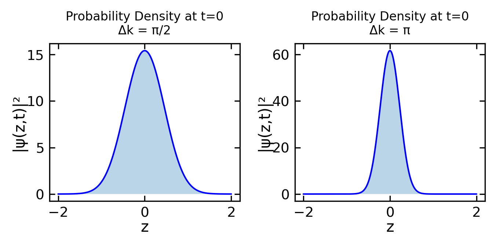
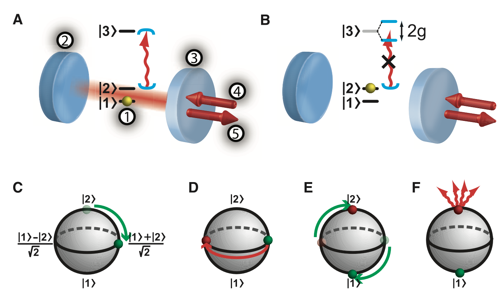

39 Matter Waves
After having established that particles exhibit wave-like properties through phenomena such as electron diffraction, we need to develop a mathematical framework to describe matter waves. While a simple plane wave ansatz might seem like a natural starting point, we will see that it has limitations in describing localized particles. This leads us to the concept of wave packets and ultimately to a probabilistic interpretation of matter waves proposed by Max Born.
39.1 Plane waves
In order to properly describe the wave character of a particle with mass \(m\) that is propagating along the \(z\) direction we choose a similar ansatz as for electromagnetic light,
\[ \psi \left( z,t \right) = C \cdot \mathrm{e}^{i\left(\omega t - k z \right)} \mathrm{.} \]
Even though we are still discussing properties of matter, the above equation has the shape of a wave function. Thus, one often refers to matter waves. In accord with the de Broglie wavelength and the analogous description of atomistic particles as waves, we can derive the kinetic energy as
\[ E_{\mathrm{kin}} = \hbar \cdot \omega \]
and the momentum as
\[ p = \hbar k \mathrm{,} \]
which allows us to reformulate the wave equation as
\[ \psi \left( z,t \right) = C \cdot \mathrm{e}^{\frac{i}{\hbar} \left(E t - p z \right)} \mathrm{.} \]
However, there is still an important distinction between photons of electromagnetic waves and corpuscles of matter waves. In the case of electromagnetic waves the phase velocity does not depend on the wave’s frequency. From the condition
\[ \frac{\mathrm{d}}{\mathrm{d}t} \left( \omega t - k z \right) = 0 \]
it becomes evident that
\[ \frac{\mathrm{d}z}{\mathrm{d}t} = \frac{\omega}{k} = v_{\mathrm{ph}} = c \]
and represents the vanishing dispersion of electromagnetic waves in vacuum \(\mathrm{d}v_{\mathrm{ph}}/ \mathrm{d} \omega = 0\). This relation does not hold true for matter waves. For a free particle (force-free motion in constant potential) we know
\[ E = E_{\mathrm{kin}} = \frac{1}{2m}p^2 \]
and
\[ \omega = \frac{\hbar}{2m}k^2 \mathrm{.} \]
If we now make use of the definition of the phase velocity \(v_{\mathrm{ph}} = \omega / k\), it becomes evident that the dispersion relation gives:
\[ v_{\mathrm{ph}} = \frac{\omega}{k} = \frac{\hbar k}{2m} \]
Matter waves show dispersion and their phase velocity does depend on the wavevector and thus on the momentum of the particle. If the particle moves with the velocity \(v_{\mathrm{p}} = p/m = \hbar k / m\), then
\[ v_{\mathrm{ph}} = \frac{v_{\mathrm{p}}}{2} \]
and the phase velocity of the matter waves corresponds to half the velocity of the particle. As a consequence, a matter wave and its phase velocity is not suited to describe the motion of particles without further considerations. Having in mind that a plane wave is distributed across the whole space, whereas a particle is somehow located, we provide remedy through the introduction of wave packets.
39.2 Wave packets
Unlike plane waves which extend infinitely in space, classical particles are localized. We can bridge this gap using wave packets (or wave trains) - superpositions of plane waves with similar frequencies and wavevectors:
\[ \psi \left( z , t \right) = \sum_j C_j \, \mathrm{e}^{i \left( \omega_j t - k_j z \right)} \]
The wave packet has maximum amplitude at position \(z_m = \left(\frac{\mathrm{d} \omega}{\mathrm{d} k} \right)_{k_0} \cdot t\), which propagates with the group velocity:
\[ v_{\mathrm{g}} = \frac{d\omega}{dk} \]
For a large number of waves with frequencies in \(\left[ \omega_0 - \Delta \omega/2 ; \omega_0 + \Delta \omega/2 \right]\) and wavenumbers in \(\left[ k_0 - \Delta k/2 ; k_0 + \Delta k/2 \right]\), the sum becomes an integral:
\[ \psi \left( z , t \right) = \int_{k = k_0 - \Delta k/2}^{k_0 + \Delta k/2} C\left(k\right) \, \mathrm{e}^{i \left( \omega t - k z \right)} \, \mathrm{d}k \mathrm{.} \]
The amplitude distribution \(C\left(k\right)\) and width \(\Delta k\) determine the wave packet’s shape in momentum space.
Position of Maximum Amplitude
If we rewrite frequencies and wave vectors as deviations from central values:
\[\omega_j = \omega_0 + \Delta \omega_j \quad \text{and} \quad k_j = k_0 + \Delta k_j\]
The phase in the exponential then becomes \((\omega_0 + \Delta \omega_j)t - (k_0 + \Delta k_j)z\). For constructive interference, the phases must be equal:
\[(\omega_0 + \Delta \omega_j)t - (k_0 + \Delta k_j)z = \text{constant}\]
For neighboring waves \((j \text{ and } j+1)\), this means:
\[(\omega_0 + \Delta \omega_j)t - (k_0 + \Delta k_j)z = (\omega_0 + \Delta \omega_{j+1})t - (k_0 + \Delta k_{j+1})z\]
Subtracting the common terms \(\omega_0t - k_0z\) from both sides gives:
\[\Delta\omega_j t - \Delta k_j z = \Delta\omega_{j+1} t - \Delta k_{j+1} z\]
This finally leads to the relation:
\[\mathrm{d}\omega \cdot t = \mathrm{d}k \cdot z\]
Therefore:
\[z = \frac{\mathrm{d}\omega}{\mathrm{d}k} \cdot t\]
This \(z\) gives the position of constructive interference, which is where the amplitude is maximum:
\[z_m = \left(\frac{\mathrm{d}\omega}{\mathrm{d}k}\right)_{k_0} \cdot t\]
The derivative \(\mathrm{d}\omega/\mathrm{d}k\) evaluated at \(k_0\) is the group velocity, showing that the maximum of the wave packet moves with the group velocity.
39.2.1 Constant amplitude wave packets
If the width of the wavenumber interval \(\Delta k\) is small compared to the wavenumber \(k_0 \gg \Delta k\), we can expand \(\omega \left( k \right)\) in a Taylor series and neglect higher terms than the linear one resulting in
\[ \omega \left( k \right) = \omega_0 + \left( \frac{\partial \omega}{\partial k} \right)_{k_0} \cdot \left( k - k_0 \right) + \ldots \]
If further the amplitude \(C_j\) does not change significantly on the interval \(\Delta k\) (\(\ll k_0\)), we can replace \(C_j\) through a constant \(C \left( k_0 \right)\). Now we get
\[ \psi \left( z , t \right) = C \left( k_0 \right) \mathrm{e}^{i \left( \omega_0 t - k_0 z \right)} \int_{\kappa = - \Delta k/2}^{ + \Delta k/2} \mathrm{e}^{i \left( u \kappa \right)} \, \mathrm{d} \kappa \mathrm{,} \]
with \(\kappa = k - k_0\) and \(u = \left(\frac{\mathrm{d} \omega}{\mathrm{d} k} \right)_{k_0} t - z\). (Note: I had a typo in the integral equation on the blackboard. It was correct here.) The integration then results in
\[ \psi \left( z , t \right) = A \left( z,t \right) \, \mathrm{e}^{i \left( \omega_0 t - k_0 z \right)} \]
with
\[ A \left(z,t \right) = 2 C \left( k_0 \right) \, \frac{\sin \left(\Delta k \ u /2 \right)}{u} \mathrm{.} \]

The function \(\psi \left( z , t \right)\) represents a plane wave whose amplitude \(A\) exhibits a maximum at \(u=0\), and therefore \(z_{\mathrm{m}} = \left(\frac{\mathrm{d} \omega}{\mathrm{d} k} \right)_{k_0} \cdot t\). We call this function \(\psi\) a wave packet. Its shape, namely height and distance to side lobes, does depend on the width of the interval \(\Delta k\) and the distribution of the amplitude \(C \left( k \right)\). The wave packet’s maximum propagates with the group velocity
\[ v_{\mathrm{g}} = \left(\frac{\mathrm{d} \omega}{\mathrm{d}k}\right)_{k_0} \]
along the \(z\) direction. Moreover, we can make use of the relation
\[ \omega = \frac{1}{\hbar} \, E = \frac{1}{\hbar} \, \frac{p^2}{2m} = \frac{1}{\hbar} \, \frac{\hbar^2 k^2}{2m} = \frac{\hbar}{2m} k^2 \]
and derive for the group velocity
\[ v_{\mathrm{g}} = \left(\frac{\mathrm{d} \omega}{\mathrm{d}k}\right)_{k_0} = \frac{\hbar}{2m} \left(\frac{\mathrm{d}}{\mathrm{d}k} \, k^2 \right)_{k_0} = \frac{\hbar k}{m} = \frac{p}{m} \mathrm{.} \]
Thus, a wave packet is better suited than a plane wave for describing a particle on the microscopic scale, because characteristics of a wave packet can be interlinked with the according properties of a particle in the classical sense.
The wave packet’s group velocity \(v_{\mathrm{g}}\) corresponds to the particle’s velocity \(v_{\mathrm{p}}\).
The wavevector of the packet’s center \(\vec{k_0}\) determines the momentum of the particle \(p_{\mathrm{p}} = \hbar k_0\).
A wave packet is localized (in contrast to a plane wave) and the wave packet’s amplitude has maximum values only in a limited range \(\Delta z\). In the case \(t=0\) we can calculate the width of the central maximum as distance between the roots \(\Delta z = 4\pi/\Delta k\). While this is sometimes incorrectly compared to the particle’s de Broglie wavelength \(\lambda_{\mathrm{p}} = 2\pi/k_0\), the actual width depends on the momentum spread \(\Delta k\) and is not fundamentally limited by the wavelength.

39.2.2 Gaussian wave packets
A Gaussian distribution for the amplitude provides an improved description of wave packets compared to constant amplitude:
\[ C \left( k \right) = C \left( k_0 \right) \, \mathrm{e}^{- \frac{\left( k-k_0\right)^2}{2 \Delta k^2}} \mathrm{.} \]
The full wave function is then given by:
\[\psi(z,t) = \int_{-\infty}^{\infty} C(k_0) \exp\left(-\frac{(k-k_0)^2}{2\Delta k^2}\right) \exp\left(i(kz - \omega(k)t)\right) dk\]
This wavefunction with the envelope is depicted below.

When integrated, the wave packet in position space has the envelope:
\[ |\psi(z,t)| = \frac{1}{\sqrt{\sigma(t)\sqrt{2\pi}}} \exp\left(-\frac{(z-v_gt)^2}{4\sigma^2(t)}\right) \]
The time-dependent width \(\sigma(t)\) evolves as:
\[ \sigma(t) = \sigma_0\sqrt{1 + \left(\frac{\hbar t}{2m\sigma_0^2}\right)^2} \]
where \(v_g = \hbar k_0/m\) is the group velocity and \(\sigma_0 = 1/(2\Delta k)\) is the initial width. The width spreads quadratically in time according to:
\[ \sigma^2(t) = \sigma_0^2\left(1 + \frac{\hbar^2t^2}{4m^2\sigma_0^4}\right) \]
The spreading rate is governed by the initial width \(\sigma_0\), Planck’s constant \(\hbar\), and particle mass \(m\). Narrower packets and lighter particles spread more rapidly.

Despite these improvements, a wave packet still has limitations in modeling particles:
- The wave function can take negative or complex values that don’t correspond to physical measurements
- Wave packets spread over time due to dispersion, unlike classical particles
- Waves can split into multiple parts, while elementary particles are indivisible
These limitations led Max Born to develop a statistical interpretation of matter waves.
39.3 The statistical interpretation of matter waves
Max Born proposed a probabilistic interpretation of quantum mechanics where the wavefunction itself does not represent a physical quantity, but rather its absolute square gives the probability density for finding a particle at a particular position. For a particle described by a wavefunction \(\psi(z,t)\), the probability of finding it within an infinitesimal interval \([z, z+dz]\) at time \(t\) is given by:
\[ P(z,t)dz = |\psi(z,t)|^2 dz \]
This interpretation arose from Born’s analysis of scattering problems, where he recognized that \(|\psi|^2\) gives the probability of a particular scattering outcome. The wavefunction itself can take complex values, but its squared modulus is always real and non-negative, making it suitable as a probability density.
Since the particle must exist somewhere in space, the total probability of finding it anywhere must equal 1, leading to the normalization condition:
\[ \int_{-\infty}^{+\infty} |\psi(z,t)|^2 dz = 1 \]

In the case the particle propagates within a three-dimensional space, we can assign a three-dimensional wave packet \(\psi \left( x,y,z, t \right)\) to this particle. As discussed above, the particle has to be located somewhere in space and as a consequence the probability to find it within the whole space is \(1\) and we can state the normalization condition
\[ \int\int\int \left| \psi \left( x,y,z, t \right) \right|^2 \, \mathrm{d}x \, \mathrm{d}y \, \mathrm{d}z = 1 \mathrm{.} \]
Thus, we can conclude:
Every particle can be represented through a matter wave \(\psi \left( x,y,z, t \right)\) being determined through the wave function \(\psi \left( x,y,z, t \right)\).
The quantity \(P \left( x,y,z, t \right) \, \mathrm{d}x \, \mathrm{d}y \, \mathrm{d}z = \left| \psi \left( x,y,z, t \right) \right|^2 \, \mathrm{d}x \, \mathrm{d}y \, \mathrm{d}z\) with its normalization \(\int\int\int \left| \psi \left( x,y,z, t \right) \right|^2 \, \mathrm{d}x \, \mathrm{d}y \, \mathrm{d}z = 1\) represents the probability to find the particle within the volume element \(\mathrm{d} V = \mathrm{d}x \, \mathrm{d}y \, \mathrm{d}z\) at the particular time \(t\).
The probability to find the particle is biggest at the center of the wave packet.
The center of the wave packet propagates with the group velocity \(v_{\mathrm{g}}\) which is identical to the classical particle velocity \(v_{\mathrm{p}}\).
The probability to find the particle within an infinite volume is not \(0\). This means one cannot locate the particle in a single spot \(\left( x,y,z \right)\). The particle’s location is smeared which corresponds to the distribution of the wave packet and obeys an uncertainty.
39.4 Relation to measurement
The probabilistic interpretation of the wave function has profound implications for the measurement process in quantum mechanics. When we perform a measurement on a quantum system:
- The act of measurement causes the wave function to “collapse” from its spread-out state to a localized state
- Before measurement, the particle exists in a superposition described by the wave function \(\psi(x,y,z,t)\)
- The measurement outcome will be random, but governed by the probability distribution \(|\psi|^2\)
- After measurement, the wave function collapses to a new state centered on the measured position
- Subsequent measurements will find the particle near this new position until the wave packet spreads out again due to time evolution
This measurement-induced collapse of the wave function is a key feature that distinguishes quantum mechanics from classical physics. It represents the transition from quantum probabilities to definite classical outcomes. The spreading of wave packets between measurements represents the return to quantum uncertainty.
The question of whether wavefunction collapse occurs during non-destructive measurements is actually still debated in quantum mechanics. While traditional Copenhagen interpretation suggests collapse occurs with any measurement, modern perspectives like quantum decoherence offer alternative views.
Non-destructive measurements (also called QND - Quantum Non-Demolition measurements) can preserve the quantum state while still extracting some information. However, they still cause some level of interaction/entanglement between the system and measuring apparatus.
Below is a figure from a recent publication on Nondestructive Detection of an Optical Photon by Reiser, Ritter an Rempe from 2013.
The authors developed a specific measurement scheme, that allows to detect the presence of a single photon without destroying it.
